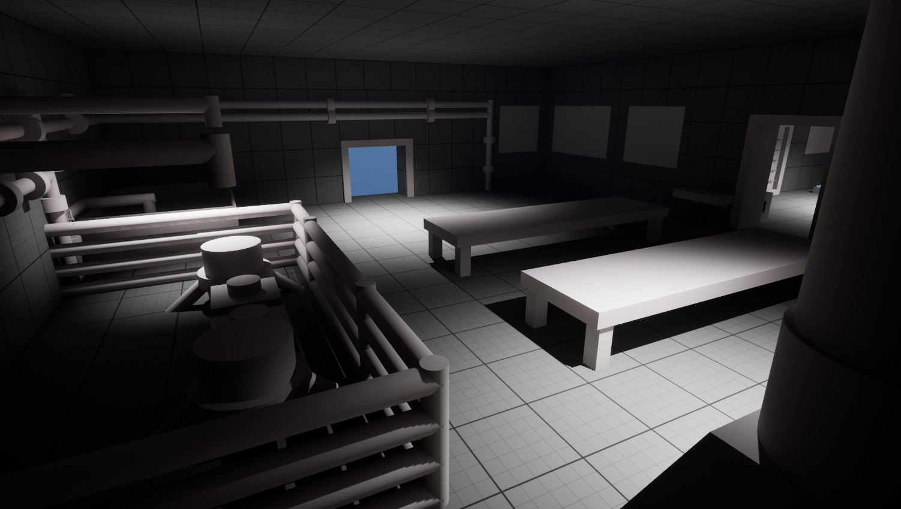

Quentin Norguet (Qnorguet)
Ma contribution sur le projet DaVinci
J'ai pas fait grand chose, je suis une victime, je suis un boulet, je suis un poids mort, je suis un parasite, mais s'il vous plaît mettez moi une bonne note.

capture 1

capture 2
capture 3
capture 4